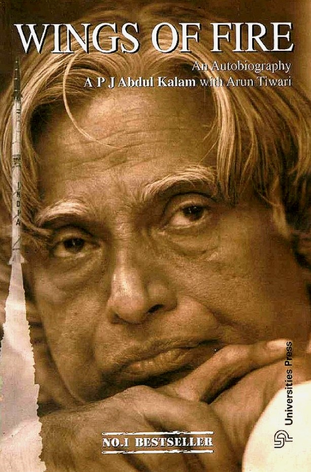

"Missle Man Of India'
Avul Pakir Jainulabdeen Abdul Kalam (15 October 1931 – 27 July 2015) was an Indian aerospace scientist who served as the 11th
president of India from 2002 to 2007. He was born and raised in Rameswaram, Tamil Nadu and studied physics and aerospace
engineering. He spent the next four decades as a scientist and science administrator, mainly at the Defence Research and
Development Organisation (DRDO) and Indian Space Research Organisation (ISRO) and was intimately involved in
India's civilian space programme and military missile development efforts[1] . He thus came to be known as the
Missile Man of India for his work on the development of ballistic missile and launch vehicle technology[2][3][4] .
He also played a pivotal organisational, technical, and political role in India's Pokhran-II nuclear tests in 1998,
the first since the original nuclear test by India in 1974.
In 1990, the Bharat Ratna, India's highest civilian award, was posthumously conferred on Ambedkar. The
salutation Jai Bhim (lit. "Hail Bhim") used by followers honours him.
☞ October 15, 1931: Avul Pakir Jainulabdeen Abdul Kalam is born in Rameswaram, Tamil Nadu, India.
☞ 1954: Kalam graduates from Madras Institute of Technology with a degree in aeronautical engineering.
☞ 1960s: Kalam begins working for India's Ministry of Defence, helping to develop the country's first satellite launch vehicle program.
☞ 1980s: Kalam serves as the Director of India's Defence Research and Development Organisation (DRDO), overseeing the development of India's Agni and Prithvi missiles.
☞ 1992-1999: Kalam serves as Chief Scientific Advisor to the Prime Minister of India.
☞ July 25, 2002: Kalam is elected President of India, becoming the country's first Muslim president and serving until 2007.
☞ 2007-2008: Kalam continues to work as a scientist and advocate for technology and education, founding the Kalam-NSS Programme to encourage scientific research among Indian youth.
☞ July 27, 2015: Kalam passes away while delivering a lecture at the Indian Institute of Management Shillong.
"Don't take rest after your first victory because if you fail in second, more lips are waiting to say that your first victory was just luck."
"Dream, dream, dream. Dreams transform into thoughts and thoughts result in action."
"Failure will never overtake me if my determination to succeed is strong enough."
"If you want to shine like a sun, first burn like a sun."
"All of us do not have equal talent. But, all of us have an equal opportunity to develop our talents."
"Man needs his difficulties because they are necessary to enjoy success."
"Thinking should become your capital asset, no matter whatever ups and downs you come across in your life."
"Let us sacrifice our today so that our children can have a better tomorrow."
If you have time, you should read more about this incredible human being on his Wikipedia page.